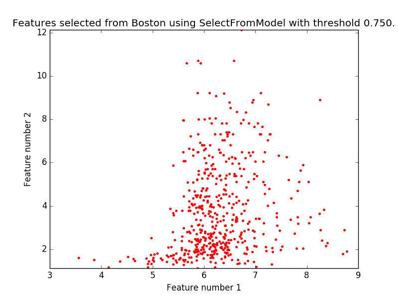

Feature selection using SelectFromModel and LassoCV¶
Use SelectFromModel meta-transformer along with Lasso to select the best couple of features from the Boston dataset.
Python source code: plot_select_from_model_boston.py
# Author: Manoj Kumar <mks542@nyu.edu>
# License: BSD 3 clause
print(__doc__)
import matplotlib.pyplot as plt
import numpy as np
from sklearn.datasets import load_boston
from sklearn.feature_selection import SelectFromModel
from sklearn.linear_model import LassoCV
# Load the boston dataset.
boston = load_boston()
X, y = boston['data'], boston['target']
# We use the base estimator LassoCV since the L1 norm promotes sparsity of features.
clf = LassoCV()
# Set a minimum threshold of 0.25
sfm = SelectFromModel(clf, threshold=0.25)
sfm.fit(X, y)
n_features = sfm.transform(X).shape[1]
# Reset the threshold till the number of features equals two.
# Note that the attribute can be set directly instead of repeatedly
# fitting the metatransformer.
while n_features > 2:
sfm.threshold += 0.1
X_transform = sfm.transform(X)
n_features = X_transform.shape[1]
# Plot the selected two features from X.
plt.title(
"Features selected from Boston using SelectFromModel with "
"threshold %0.3f." % sfm.threshold)
feature1 = X_transform[:, 0]
feature2 = X_transform[:, 1]
plt.plot(feature1, feature2, 'r.')
plt.xlabel("Feature number 1")
plt.ylabel("Feature number 2")
plt.ylim([np.min(feature2), np.max(feature2)])
plt.show()
Total running time of the example: 0.11 seconds ( 0 minutes 0.11 seconds)